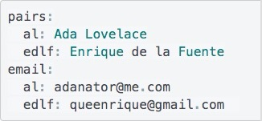
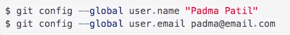

Setting Pairs
- In the home directory, create a file called .pairs
- Open the .pairs file using atom
- Set pairs in atom by replicating the following format, using you and your partners initials and email addresses.

If you are working alone, you need to set up a global configuration instead, using the following commands:
